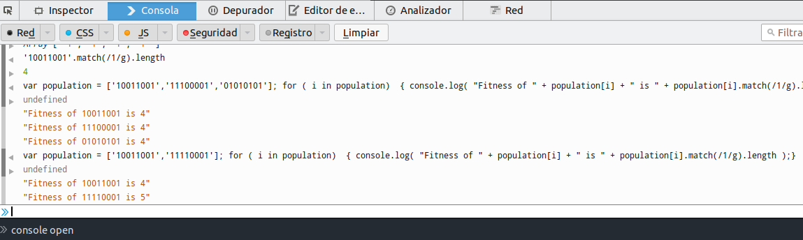
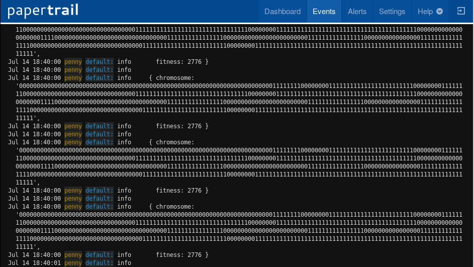
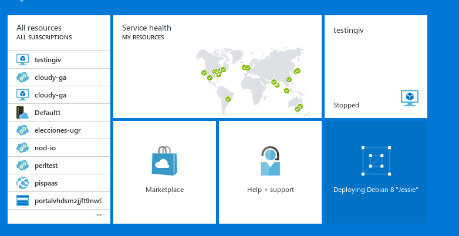
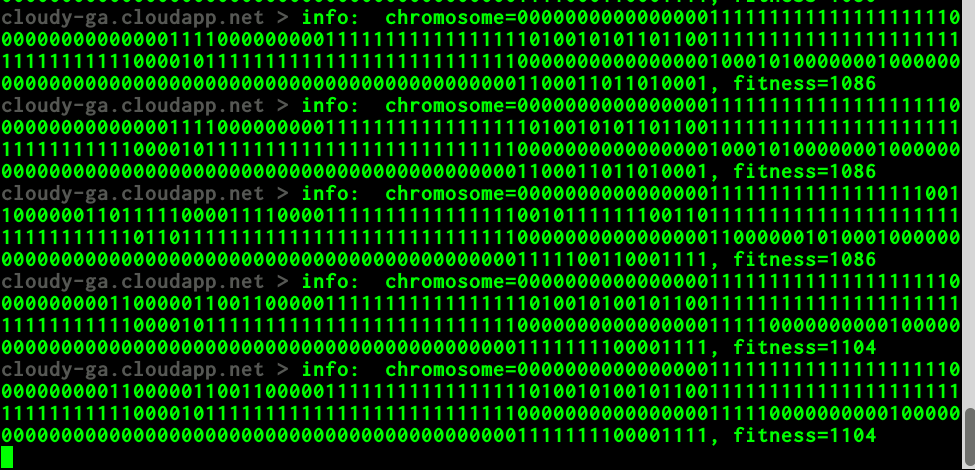
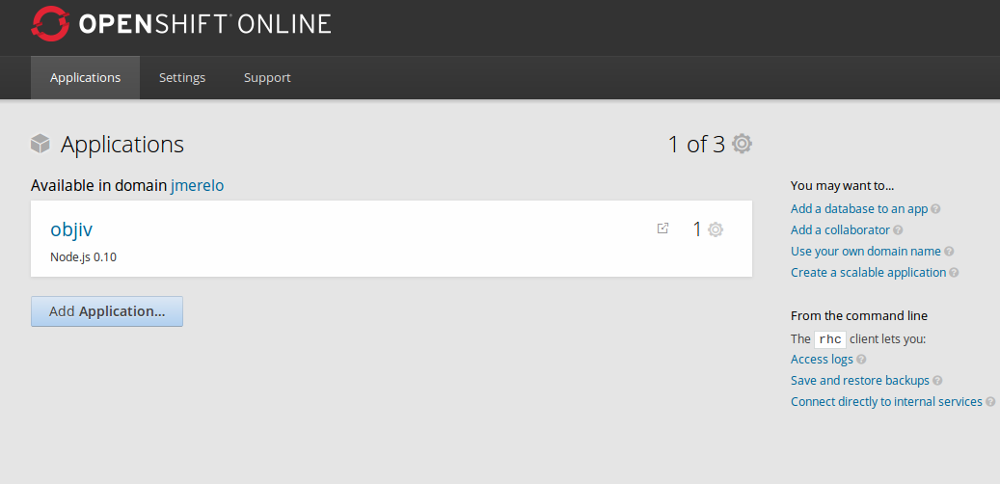

What is the cloud?
Virtualized resources on tap
Scaling out of the box
Distributed, multi-vendor, computing
Reproducible configurations
⇨Reproducible science
A new application development and deployment paradigm
... designed around flexibility, scaling and resillience
Grab the whole presentation and code
git.io/cloudEC
Address your tweets @jjmerelo + #ecal17
JavaScript = native language of the cloud
Let's do JavaScript!
Menu → developer → console
Say hello to these nice folks!
console.log('¡Hola, chavales!')Or the much more annoying
alert('¿Qué pasa, coleguis?');This is an object. That, too.
console.log('Buenos días'.length)Arrays are objects, and the other way round
console.log(['Buenos días','Buenas tardes','Buenas noches'].pop())Chromosomes and fitness
var chromosome = '1001100110011';
var fitness_of = new Object;
fitness_of[chromosome] = chromosome.match(/1/g).length;
var rr = function (chromosome) {
var fitness = 0;
for (var i = 0; i < chromosome.length; i+=4 ) {
var ones = (chromosome.substr(i, 4).match(/1/g) || []).length;
fitness += ( ones == 0 || ones == 4 );
}
return fitness;
}; JavaScript is:
Standard, (reasonably) fast and
Everywhere
Yes, also in your gaming console.
(Almost) forget about loops
function do_ea() {
eo.generation();
generation_count++;
if( (eo.fitness_of[eo.population[0]] < traps*conf.fitness.b )
&& ( generation_count*conf.population_size < conf.max_evaluations)) {
setTimeout(do_ea, 5);
} else {
console.log( "Finished ", log );
}
}node.js is an asynchronous JS interpreter.
NodEO is an EA library.
var eo = new nodeo.Nodeo( { population_size: population_size,
chromosome_size: chromosome_size,
fitness_func: utils.max_ones } );
do {
eo.generation();
console.log( eo.population[0] );
} while ( eo.fitness_of[eo.population[0]] < chromosome_size );Cloud is about reproducible infrastructure
Let's containerize
Cooking for containers
var hiff = new HIFF.HIFF();
var eo = new nodeo.Nodeo( { population_size: conf.population_size,
chromosome_size: chromosome_size,
fitness_func: hiff } );
logger.info( { start: process.hrtime() } );evolve(generation_count, eo, logger, conf, check );A container does one thing
if ( typeof process.env.PAPERTRAIL_PORT !== 'undefined'
&& typeof process.env.PAPERTRAIL_HOST !== 'undefined' ) {
logger.add(winston.transports.Papertrail,
{
host: process.env.PAPERTRAIL_HOST,
port: process.env.PAPERTRAIL_PORT
}
)
}var check = function( eo, logger, conf, generation_count ) {
if ( (eo.fitness_of[eo.population[0]] < conf.fitness_max )
&& (generation_count*conf.population_size < conf.max_evaluations )) {
logger.info( { "chromosome": eo.population[0],
"fitness" : eo.fitness_of[eo.population[0]]} );
evolve( generation_count, eo, logger, conf, check);
} else {
logger.info( {end: {
time: process.hrtime(),
generation: total_generations,
best : { chromosome : eo.population[0],
fitness : eo.fitness_of[eo.population[0]]}}} );
conf.output = conf.output_preffix+".json";
process.exit();
}
};Describe infrastructure: package.json
{
"name": "hiffeitor",
"scripts": {
"test": "mocha",
"start": "./callback-ea-HIFF.js"
},
"dependencies": {
"nodeo": "^0.2.1",
"winston": "^2.2.0",
"winston-logstash": "^0.2.11",
"winston-papertrail": "^1.0.2"
},
"devDependencies": {
"flightplan": "^0.6.14"
}
}Introducing docker
Lightweight virtualization
Portable infraestructure
Using docker
docker pull jjmerelo/cloudy-ga
Containerizing through
Dockerfile
FROM phusion/baseimage
MAINTAINER JJ Merelo "jjmerelo@gmail.com"
RUN echo "Building a docker environment for NodEO"
ENV DEBIAN_FRONTEND=noninteractive
RUN apt-get update && apt-get upgrade -y
RUN apt-get install apt-utils -y
RUN apt-get install nodejs npm -y
RUN mkdir app
ADD https://github.com/JJ/cloudy-ga/raw/master/app/callback-ea-HIFF.js app
ADD https://github.com/JJ/cloudy-ga/raw/master/app/package.json app
ADD https://github.com/JJ/cloudy-ga/raw/master/app/hiff.json app
WORKDIR /app
RUN npm i
RUN chmod +x callback-ea-HIFF.jsCMD npm startBring your own container
sudo docker build --no-cache -t jjmerelo/cloudy-ga:0.0.1
... and run it
sudo docker run -t jjmerelo/cloudy-ga:0.0.1
-e "PAPERTRAIL_PORT=7777"
-e "PAPERTRAIL_HOST=logs77.papertrailapp.com"
sudo docker run -t jjmerelo/cloudy-ga:0.0.1
-e "PAPERTRAIL_PORT=7777"
-e "PAPERTRAIL_HOST=logs77.papertrailapp.com"Logging matters
Use CoreOS
Ready to run on Azure or anywhere
It's not programming as usual
Reactive programming
Algorithm + stream = application in the cloud
Decoupled processing and data structures
Before
do {
eo.generation();
} while ( eo.fitness_of[eo.population[0]] < chromosome_size ); After decoupling
var random_chromosome = function() {
return utils.random( chromosome_size );
};
var population = new Population();
population.initialize( population_size, random_chromosome); var eo = new fluxeo( this_fitness,
new Tournament( tournament_size,
population_size-2 ),
check);Algorithm on population
eo.algorithm( population, function ( population ) {
logger.info( {
end: { time: process.hrtime(),
generation: total_generations,
best : { chromosome : population.best,
fitness : population.fitness(population.best) }
}
});
});Running in the cloud
Infrastructure as a service
Create instance
Set up with Ansible
- hosts: "{{target}}"
tasks:
- name: install prerrequisites
command: apt-get update -y && apt-get upgrade -y
- name: install packages
apt: pkg={{ item}}
with_items:
- git
- npm
- name: Create profile
copy: content="export PAPERTRAIL_PORT={{PAPERTRAIL_PORT}}}"
dest=/home/cloudy/.profileRun the playbook
ansible-playbook git.playbook.yml
-e "target=azuredeb"
-u ubuntu
-i ./hosts.txt -vvvvReady to run ✓
But there's something missing here
Deploying to the cloud
Let's use FlightPlan
plan.target('azure', {
host: 'cloudy-ga.cloudapp.net',
username: 'azureuser',
agent: process.env.SSH_AUTH_SOCK
});
// Local
plan.local(function(local) {
local.echo('Plan local: push changes');
local.exec('git push');
});... And after setup
plan.remote(function(remote) {
remote.log('Pull');
remote.with('cd cloudy-ga',function() {
remote.exec('git pull');
remote.exec('cd app;npm install .');
});
remote.with('cd /home/azureuser/cloudy-ga/app',function() {
remote.exec('npm start');
});
});IaaS have free tiers
But it generally is pay-as-you-go
Great if you do small amounts of computation
You might not need a whole server
Platform as a service
Browsers communicate using HTTP commands
PUT, GET, POST, DELETE
Ajax, a standard browser-server communication framework
HTTP petitions from a standard object.
Asynchronous!
There's freemium PaaS
Heroku, OpenShift and IBM BlueMix or Azure Web Apps
Pool-based evolutionary algorithms: not so canonical any more
Detaching population from operations
➡ Reactive programming.
Three good things about pool-based EAs
1. Self-organizing clients
2. Fully asynchronous
3. Persistent population
Island models can be used too
The cloudy server
app.put('/experiment/:expid/one/:chromosome/:fitness/:uuid',
function(req, res){
// stuff here
logger.info("put", { chromosome: req.params.chromosome,
fitness: parseInt(req.params.fitness),
IP: client_ip,
worker_uuid:req.params.uuid} );
res.send( { length : Object.keys(chromosomes).length });
}app.get('/random', function(req, res){
var keys = Object.keys(chromosomes );
var one = keys[ Math.floor(keys.length*Math.random())];
res.send( { 'chromosome': one } );
logger.info('get');
});Check out
✓ Asynchronous
✓ Uses Logger
Changes in the client: draw from pool
rest.get( conf.url + 'random' ).on('complete', function( data ) {
if ( data.chromosome ) {
population.addAsLast( data.chromosome );
}
});Put into pool
var this_request = conf.url
+ 'experiment/0/one/' + population.best() + "/"
+ population.fitness(population.best()) + "/"
+ UUID;
rest.put( this_request ).on("complete", function( result, response ) {
if ( response.statusCode == 410 ) {
finished = true;
experiment_id = result.current_id;
}
});Deploy server to PaaS ✓
Deploy clients to IaaS ✓
➡ And run!
Logs glue everything together
Vagrant for orchestration
Vagrant.configure("2") do |config|
config.vm.box = "ubuntu/xenial64"
config.vm.provision "shell", inline: <<-SHELL
apt-get update
apt-get upgrade -y
SHELL
config.vm.provision "main", type: "ansible" do |ansible|
ansible.extra_vars = { target: "all" }
ansible.playbook = "playbook.yml"
end
# and the rest...
endAll together
✓ Get servers ➡ PaaS, Loggers
✓ Create/provision boxes ➡ Vagrant/Ansible
✓ Deploy/run ➡ FlightPlan
Why should you do evolution on the cloud?
✓ It's new!
✓ It scales!
➡ It changes the algorithmic paradigm
♻ Let Nature be your guide
Take this home
- Cloud is the new (grid|cluster)
- There is (almost) free lunch
- Reactive programming
- We should ❤ logs
Questions?
Code: git.io/cloudEC
Tweet out (of follow) @jjmerelo
Credits
- Faucet on the sky by Kristin Nador
- Strip mall by Thomas Hawk
- Mobiles, Flickr image by Kai Hendry
flic.kr/p/5omH5r - People in room from Adriaan Bloem
flic.kr/p/8NDCRh - Shooting at clouds by Charles Prithvi Raj
- Sandbox, Flickr image by Gil Garcia
flic.kr/p/5Pa7ZJ - B&W sandbox, Flickr image by Stefani Woods
flic.kr/p/4QiGQV - HTTP codes, Image by Paul Downey
flic.kr/p/8yZyBF - Data center in cave, from Antony
Antony
flic.kr/p/6K3ZAG - Nuns and pool, Flickr image by Lorianne diSabato @
flic.kr/p/nXfbQ6 - 3 fingers, Flickr image by Mutiara Karina
https://flic.kr/p/a9SSm3. - Freedom by Gonzalo Baeza